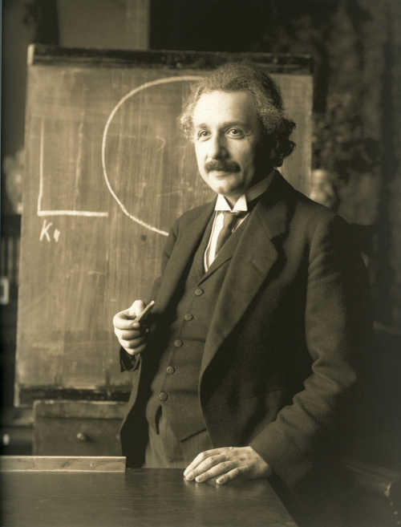

Estou testanto html5
Estou testando o html5, antes eu usava a versão do html4. Sim, exatamente em pleno 2022 eu ainda fazia uso de uma versão anterior a atual.
Como dizia Einstein:
 "A mente que se abre a novos conhecimentos, ela jamais voltará a seu tamanho natural"
Albert Einstein
Albert Einstein (Ulm, 14 de março de 1879 — Princeton, 18 de abril de 1955) foi um físico teórico alemão que desenvolveu a teoria da relatividade geral, um dos pilares da física moderna ao lado da mecânica quântica. Embora mais conhecido por sua fórmula de equivalência massa-energia, E = mc² — que foi chamada de "a equação mais famosa do mundo" —, foi laureado com o Prêmio Nobel de Física de 1921 "por suas contribuições à física teórica" e, especialmente, por sua descoberta da lei do efeito fotoelétrico, que foi fundamental no estabelecimento da teoria quântica.

Albert Einstein nasceu em Ulm, no Reino de Württemberg, Império Alemão (atual Baden-Württemberg, Alemanha), em 14 de março de 1879. Seus pais eram Hermann Einstein, um vendedor e engenheiro, e Pauline Einstein (nascida Koch). Os Einstein eram judeus asquenazes não praticantes. Em 1880 a família mudou-se para Munique, onde seu pai e tio fundaram a Elektrotechnische Fabrik J. Einstein & Cie, empresa que fabricava equipamentos elétricos acionados por corrente contínua. Um ano mais tarde seus pais deram à luz a uma menina, Maria "Maja" Einstein, sua irmã mais nova. Com cinco anos de idade o jovem Albert estudou em uma escola primária católica durante três anos. Aos oito foi transferido para o Ginásio Luitpold, hoje conhecido como Ginásio Albert Einstein, onde recebeu educação escolar primária e secundária, até deixar a Alemanha sete anos depois. Seu tio Jacob, um engenheiro, e Max Talmey, um jovem estudante pobre de medicina que jantava na casa da família uma vez por semana entre 1889 e 1894, foram grandes influências durante seus anos de formação. Eles incentivaram sua curiosidade inerente e insaciável sobre tudo. Talmey trouxe livros populares de ciência, incluindo Crítica da Razão Pura de Immanuel Kant, que Einstein começou a ler.
Lógica de programação, isso inclúi várias linguagens (html,css3 e java).